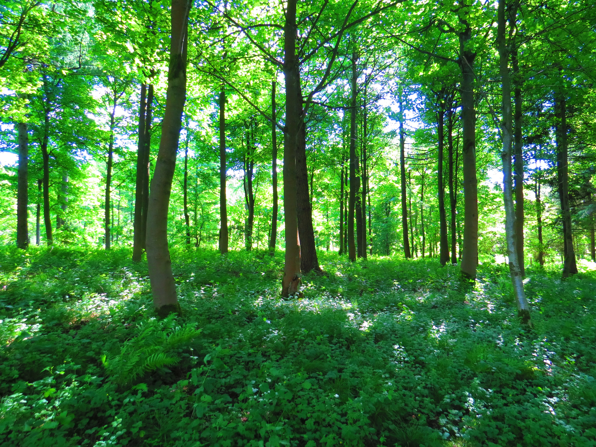

Slide in on Scroll
 The majestic allure of mountains is a testament to the Earth's breathtaking natural beauty. Rising proudly towards the heavens, their snow-capped peaks and rugged landscapes evoke a sense of wonder and reverence. Each mountain range, from the towering Himalayas to the iconic Rockies, tells a unique geological tale forged over millions of years. These geological giants not only captivate the eye but also challenge the spirit of adventurers who seek to conquer their heights. Scaling their slopes demands physical endurance, mental fortitude, and a deep respect for the unpredictable forces of nature.
Beyond the physical challenges, mountains provide refuge for diverse ecosystems that have adapted to survive in harsh alpine environments. From delicate alpine flowers to elusive mountain goats, the flora and fauna that call these heights home are a testament to life's tenacity. Moreover, mountains serve as water towers for surrounding regions, their glaciers and snowfields feeding rivers that sustain entire civilizations.
Yet, mountains hold more than geological and ecological significance. They are often imbued with cultural and spiritual meaning. Many societies throughout history have considered mountains sacred, places where deities reside or where spiritual enlightenment can be attained. These peaks, shrouded in myths and legends, inspire introspection and awe, reminding us of our place in the vast tapestry of the universe.
The majestic allure of mountains is a testament to the Earth's breathtaking natural beauty. Rising proudly towards the heavens, their snow-capped peaks and rugged landscapes evoke a sense of wonder and reverence. Each mountain range, from the towering Himalayas to the iconic Rockies, tells a unique geological tale forged over millions of years. These geological giants not only captivate the eye but also challenge the spirit of adventurers who seek to conquer their heights. Scaling their slopes demands physical endurance, mental fortitude, and a deep respect for the unpredictable forces of nature.
Beyond the physical challenges, mountains provide refuge for diverse ecosystems that have adapted to survive in harsh alpine environments. From delicate alpine flowers to elusive mountain goats, the flora and fauna that call these heights home are a testament to life's tenacity. Moreover, mountains serve as water towers for surrounding regions, their glaciers and snowfields feeding rivers that sustain entire civilizations.
Yet, mountains hold more than geological and ecological significance. They are often imbued with cultural and spiritual meaning. Many societies throughout history have considered mountains sacred, places where deities reside or where spiritual enlightenment can be attained. These peaks, shrouded in myths and legends, inspire introspection and awe, reminding us of our place in the vast tapestry of the universe.
The vastness of the sea stretches beyond the horizon, a seemingly endless expanse of water that has captivated human imagination for centuries. Its rhythmic waves symbolize the eternal ebb and flow of life itself. From calm mornings where the sun dances on gentle ripples to tempestuous storms that showcase the sea's raw power, its moods are as diverse as the emotions it invokes.
Beneath the surface lies a world teeming with life. Coral reefs burst with color, and schools of fish move in synchrony like living art. The ocean's depths hold mysteries yet to be uncovered, reminding us of the countless species that remain undiscovered. Marine life, from the microscopic plankton that form the base of the food chain to the awe-inspiring blue whales, is interconnected in a delicate dance that keeps our planet's ecosystems in balance.
The sea  has been a source of sustenance and livelihood for countless coastal communities. Fishing and maritime trade have connected cultures across the globe, fostering exchange and collaboration. But as humanity's impact on the environment deepens, the sea faces significant challenges, including pollution, overfishing, and climate change. The urgent need for marine conservation and sustainable practices is a reminder of our responsibility to protect this vast and irreplaceable resource.
has been a source of sustenance and livelihood for countless coastal communities. Fishing and maritime trade have connected cultures across the globe, fostering exchange and collaboration. But as humanity's impact on the environment deepens, the sea faces significant challenges, including pollution, overfishing, and climate change. The urgent need for marine conservation and sustainable practices is a reminder of our responsibility to protect this vast and irreplaceable resource.
The beach is a meeting point between land and sea, a place of transition and transformation. Its sandy shores invite us to kick off our shoes, feel the grains between our toes, and reconnect with the simple joys of life. The rhythmic sound of waves breaking against the shore is a lullaby that soothes the soul, while the salty breeze carries the promise of adventure.
Beaches  are not merely landscapes; they are the embodiment of leisure and relaxation. Families build sandcastles with boundless imagination, friends play beach volleyball with infectious laughter, and couples stroll hand in hand, leaving footprints in the sand. Seashells and colorful pebbles are the beach's gifts, tokens of memories waiting to be collected.
However, the serene beauty of the beach often masks the growing challenges it faces. Plastic pollution mars once-pristine shores, endangering marine life and ecosystems. Rising sea levels threaten to erode coastlines and displace communities. The call for responsible tourism and conservation efforts is a plea to preserve the enchantment of the beach for future generations.
are not merely landscapes; they are the embodiment of leisure and relaxation. Families build sandcastles with boundless imagination, friends play beach volleyball with infectious laughter, and couples stroll hand in hand, leaving footprints in the sand. Seashells and colorful pebbles are the beach's gifts, tokens of memories waiting to be collected.
However, the serene beauty of the beach often masks the growing challenges it faces. Plastic pollution mars once-pristine shores, endangering marine life and ecosystems. Rising sea levels threaten to erode coastlines and displace communities. The call for responsible tourism and conservation efforts is a plea to preserve the enchantment of the beach for future generations.
Stepping into a forest is like entering a realm of enchantment, where sunlight filters through a verdant canopy, and the air is filled with the earthy scent of life. Forests are vibrant ecosystems that support a staggering array of flora and fauna. From towering evergreens to dense tropical jungles, these habitats provide sanctuary for species both familiar and exotic.
Forests are essential for the health of our planet. They act as carbon sinks, absorbing vast amounts of carbon dioxide and releasing oxygen, thereby mitigating the impact of climate change. Ancient trees hold stories within their rings, preserving the history of the land they have witnessed.
Yet, forests face an existential threat. Deforestation, driven by human activities such as logging, agriculture, and urban expansion, has led to habitat loss, biodiversity decline, and disruptions in delicate ecosystems. The urgent need for reforestation and sustainable forestry practices underscores the importance of protecting these vital havens of life.
Lakes are nature's tranquil mirrors, reflecting the world around them in shimmering beauty. From small alpine tarns to expansive inland seas, these bodies of water enrich landscapes with their presence. Lakeshores invite contemplation, offering a respite from the chaotic rhythm of life.
Lakes  are more than serene vistas; they are lifelines for communities and ecosystems alike. Their freshwater sustains agriculture, industry, and wildlife. Fishing in still waters provides sustenance and recreation, while boating and kayaking offer a way to connect with the natural world.
However, lakes are not immune to environmental threats. Pollution from agricultural runoff and urban development can degrade water quality, posing risks to aquatic life and human health. Invasive species can upset delicate balances, disrupting native ecosystems. Conservation efforts seek to safeguard the purity of these aquatic havens, emphasizing the importance of responsible stewardship.
In a world where our actions reverberate across the interconnected web of life, understanding and respecting the mountains, sea, beach, forest, and lakes is not just an appreciation of nature's wonders but a commitment to safeguarding the future of our planet.
are more than serene vistas; they are lifelines for communities and ecosystems alike. Their freshwater sustains agriculture, industry, and wildlife. Fishing in still waters provides sustenance and recreation, while boating and kayaking offer a way to connect with the natural world.
However, lakes are not immune to environmental threats. Pollution from agricultural runoff and urban development can degrade water quality, posing risks to aquatic life and human health. Invasive species can upset delicate balances, disrupting native ecosystems. Conservation efforts seek to safeguard the purity of these aquatic havens, emphasizing the importance of responsible stewardship.
In a world where our actions reverberate across the interconnected web of life, understanding and respecting the mountains, sea, beach, forest, and lakes is not just an appreciation of nature's wonders but a commitment to safeguarding the future of our planet.